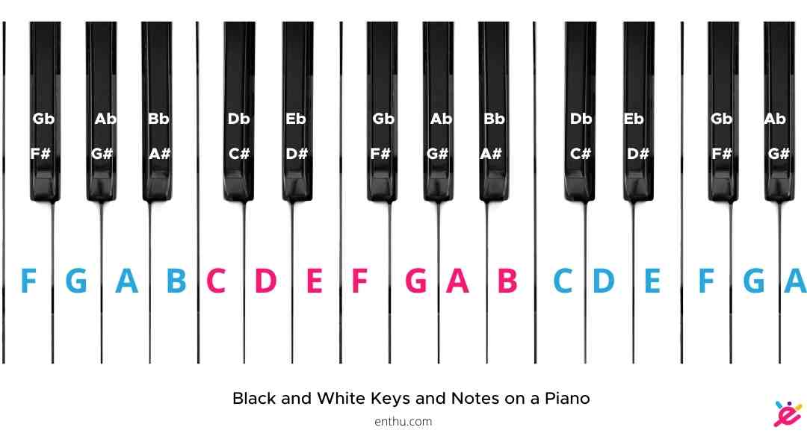
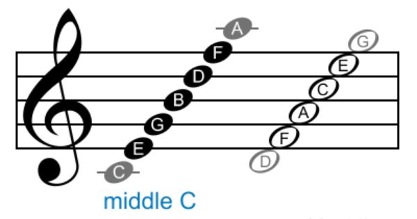

I started playing the piano when I was almost 5 years old. I continued to take classes until I was in eighth grade, around 13 years old. After taking classes for 8 years I think I could teach others how to play.
I took lessons at Florentine School of Music Art & Academics but unfortunately they are now permanantly closed.
First learning the keys and the note letter each mean.
And reading the notes off the staff.
